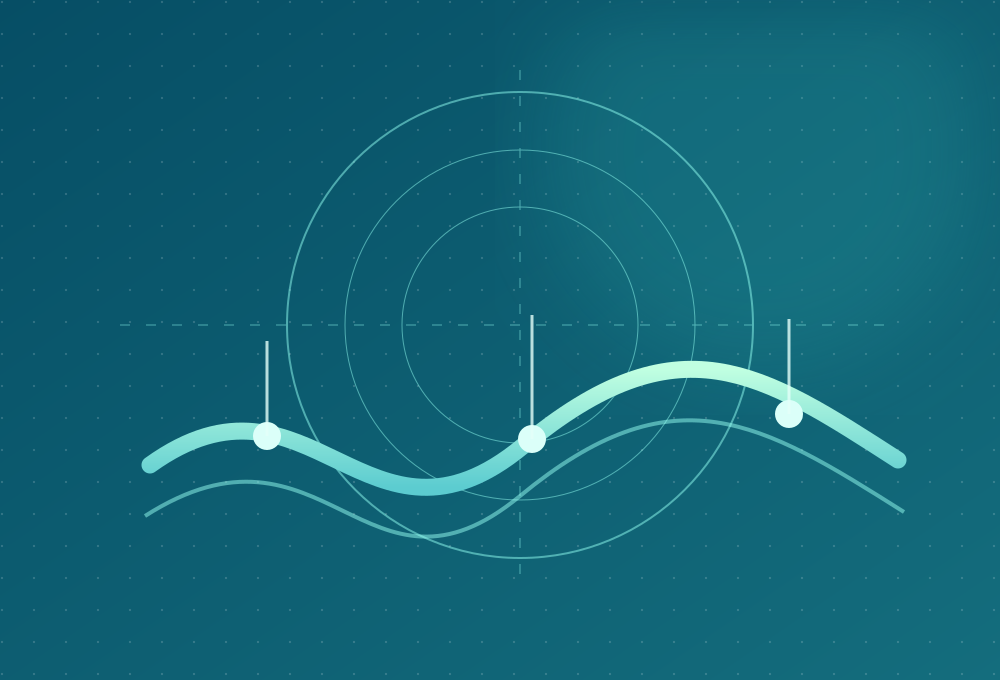
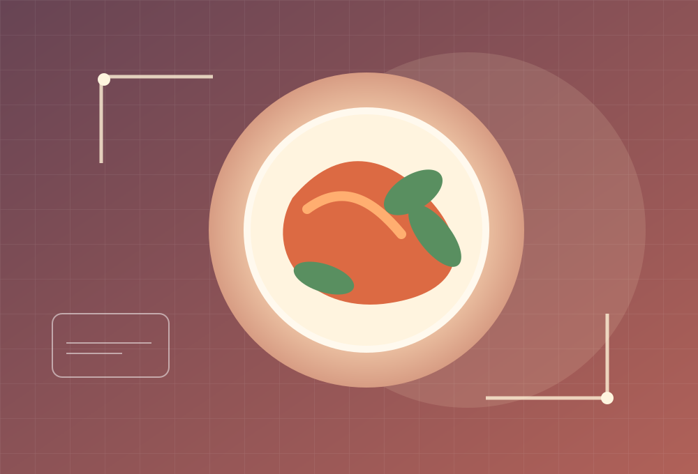
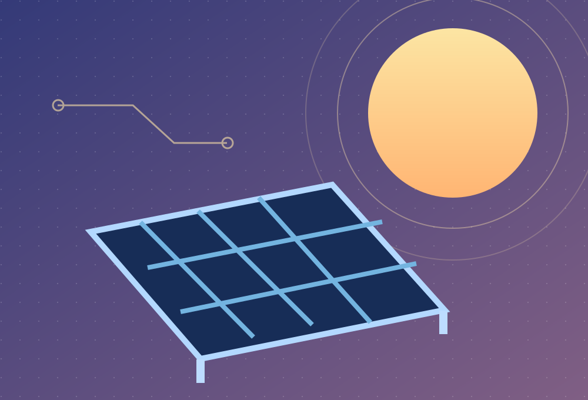
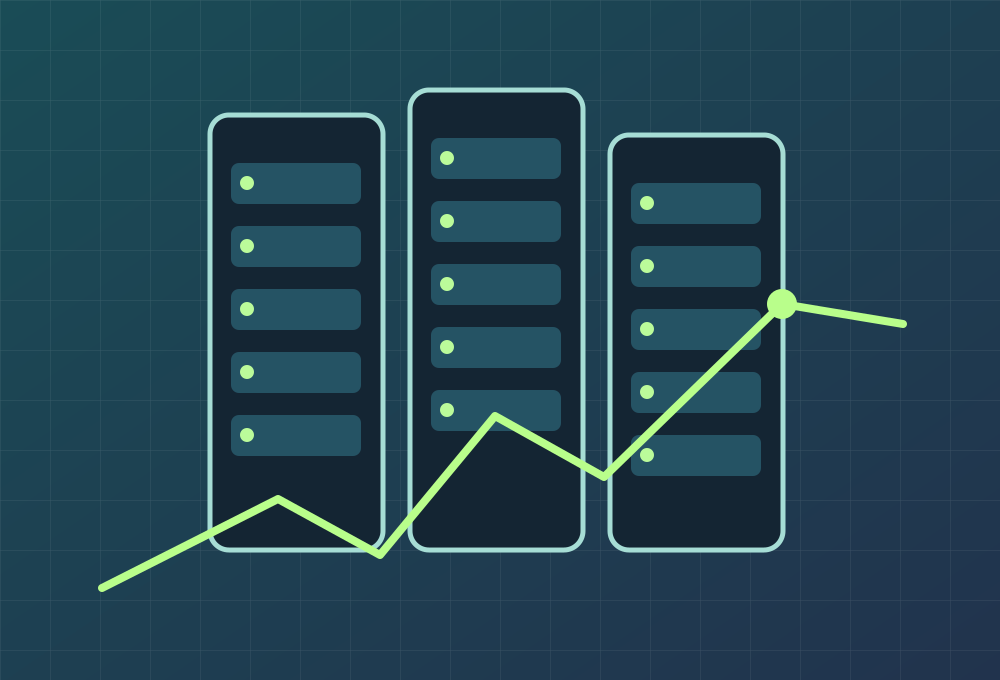
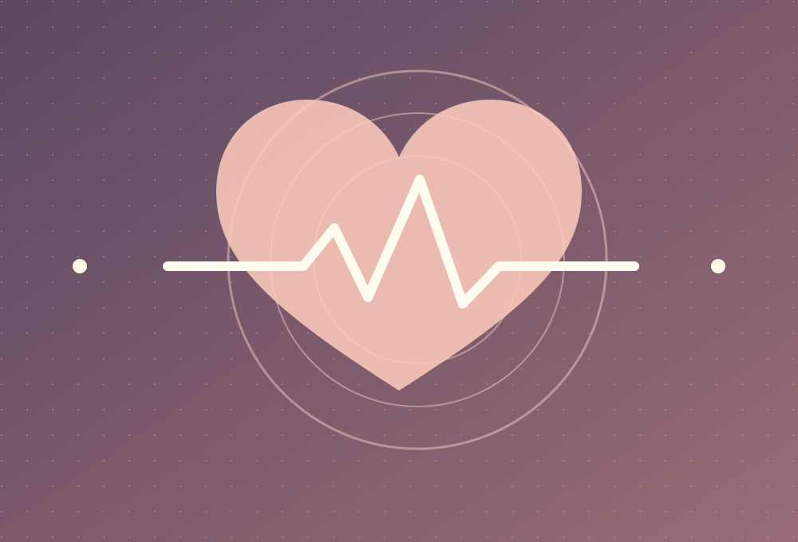

Từ ý tưởng.Đến đời thực.
Xin chào, tôi là TS. Trần Minh Nhựt — giảng viên và nhà nghiên cứu yêu thích việc biến kiến thức thành những hệ thống có thể đo, thử nghiệm và cải tiến.
Những điều
đang khám phá.
Từ nguyên mẫu thiết bị đến nghiên cứu dữ liệu: mỗi đề tài là một bài toán cần được kiểm chứng.

AQUA SENSE AI
Nước sạch. Dữ liệu rõ. Chẩn đoán thông minh.

NutriScale AI
Nhìn món ăn. Cân khối lượng. Hiểu dinh dưỡng.

Solar IoT AI
Theo dõi năng lượng. Thích nghi với điều kiện thực.

Hiệu quả năng lượng PUE
Đưa tri thức vật lý vào mô hình dự báo.

Điện tâm đồ đa nguồn
AI y sinh không chỉ đúng trên một bộ dữ liệu.

HRV và mệt mỏi sinh lý
Giải mã biến thiên nhịp tim và mệt mỏi.
Nghiên cứu
để làm được.
Tôi quan tâm đến nơi điện tử, dữ liệu và con người gặp nhau — khi một bài toán kỹ thuật trở thành trải nghiệm hữu ích.
Nền tảng nghiên cứu BioMEMS, công nghệ vi/nano cùng kinh nghiệm giảng dạy giúp tôi kết nối tư duy khoa học với phát triển nguyên mẫu, hệ thống nhúng, cảm biến và AI chạy tại thiết bị.
Cảm biến, xử lý tín hiệu sinh học, thiết bị đo và ứng dụng học máy.
ESP32, thu thập dữ liệu, kết nối thông minh và giao diện điều khiển.
Mô hình nhỏ gọn, chạy cục bộ và nghiên cứu trên dữ liệu thực tế.
Học qua thiết kế, thử nghiệm, đo lường và giải quyết bài toán cụ thể.
Hỏi đúng.
Đo đúng.
Làm tới cùng.
Từ một ý tưởng nhỏ, bắt đầu bằng nguyên lý rõ ràng, dữ liệu có thể kiểm tra và nguyên mẫu chạy được. Công nghệ đáng giá nhất khi nó hữu ích và dễ tiếp cận.
Xem các nghiên cứu